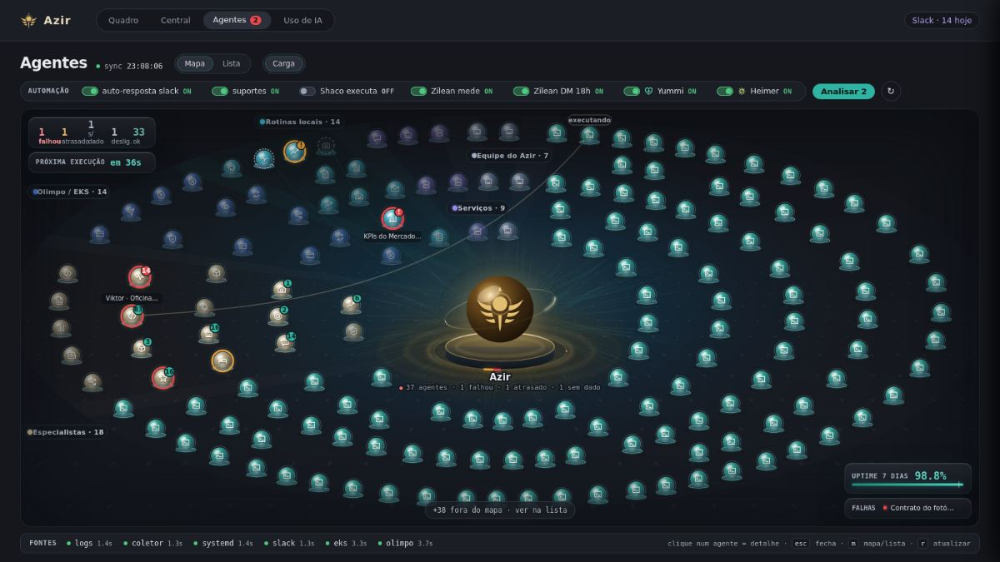
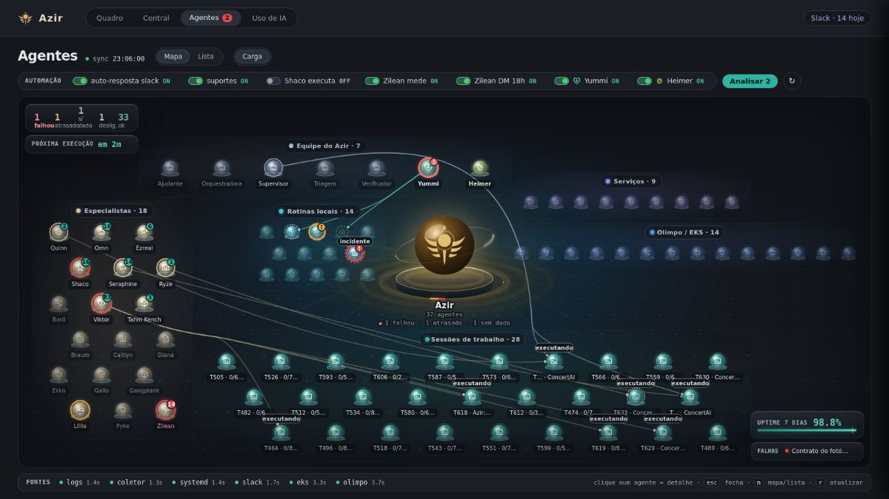

Aba Agentes leve com muitas tasks
Task T618 · 16/11/2026
O que foi feito
Por que pesava: cada subtask em andamento virava uma bolinha no mapa, e cada mudança de card redesenhava a tela inteira na hora. Com as subtasks do ConcertAI eram mais de 100 bolinhas e dezenas de redesenhos por segundo. Por isso o mapa piscava e o navegador travava.
- Subtasks agrupadas pela mãe: no mapa aparece uma bolinha só por task-mãe, com quantas já terminaram (ex.:
T464 · 3/12). Passando o mouse, aparecem as subtasks que estão rodando. Clicando, abre o card da mãe. - Sem piscar: uma subtask que termina só muda o número. O mapa não se reorganiza. Quando chegam muitas mudanças juntas, a tela redesenha uma vez a cada 250 ms em vez de uma vez por mudança.
- Setas paradas: o seu ajuste (setas sem pulsar) foi mantido. Também parei os fluxos entre especialista e sessão. Com a aba do navegador em segundo plano, nada no mapa anima.
Teste com 134 subtasks abertas
As duas versões rodaram no mesmo navegador, com os seus cards de verdade e 60 mudanças de card em 3 segundos.
| Antes | Agora | |
|---|---|---|
| Bolinhas de sessão no mapa | 112 (+38 que não couberam) | 28 |
| Tempo com a tela travada | 59,7 s | 4,8 s |
| Tela respondendo depois das mudanças | 9 s | na hora |
| Leituras dos cards no servidor | 69 | 11 |
| Animações rodando | 193 | 0 |


Como usar
É só dar F5 na aba Agentes: http://localhost:4777/?v=agentes. Não precisa reiniciar o Azir, porque a tela é lida direto dos arquivos.
Pra que serve
Mesmo com um projeto grande dividido em dezenas de subtasks, dá para olhar o mapa sem travar o navegador. Cada projeto aparece como um item só, com o andamento em número.
Links
Aba Agentes: http://localhost:4777/?v=agentes
Commit: cb3eaaf (branch trabalho do orquestrador)
Detalhe técnico
public/mapa.js: sessoesMapa junta as subtasks no nó sessao:<mãeId>; teiaAgrupada remapeia as arestas; rotuloGrupo reserva o contador "99/99" no layout, e o formaNo troca pelo número real. public/app.js: agendarRender faz 1 GET /api/cards + render a cada 250 ms; dica do nó-mãe; body[data-oculto] no visibilitychange. public/app.css: teia sem cometa nem anel pulsante, mantendo o 8bfc66b. Testes: npm test 795/795, mais 2 testes novos em tests/mapa.test.ts. Medição feita com Chromium headless na VPS (load 30 a 76 durante o teste, então os tempos absolutos ficam inflados nas duas versões), A/B entre o HEAD e o código novo.